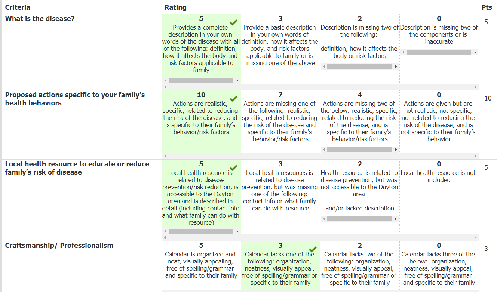

8th Grade
Skin Cancer Calendar Project


Skin Color Project
Genius Hour Project
I had a major success through the genius Hour Project, I made a videogame from nothing. The genius hour project was where we chose a topic, research it, and create something about them. My topic was creation of videogames from past to present, and as you may guess I made a videogame. I used a software called Game Maker Studios 2, which is a 2D game maker in which you code all your stuff like with html. To make the game I had to then learn the coding language used in game maker, which wasn’t too hard, I just looked up some videos and learned that way. As you can see by pictures bellow I ended up with a lot of code, but that’s only half of the code needed to be done. I had all the artwork done by a willing friend, so that’s some work I didn’t need to do. But I had to create the sound effects, and a whole system of code that gave you the games physics. The game plays like so; you’re a space dude who destroys a bunch of robot drones that come out of the sky with your trusty arm cannon. Though the drones also shoot back at you, so you’ve got to learn the tricks of dodging bullets, while also firing bullets. To wrap up, I had a success through the genius hour project by making a videogame from scratch. I had to learn a whole new coding language, and learn how to make or find sound effects. I then put it in action and created a game.
If you want to know more about my genius hour project, click HERE for a webpage about it.